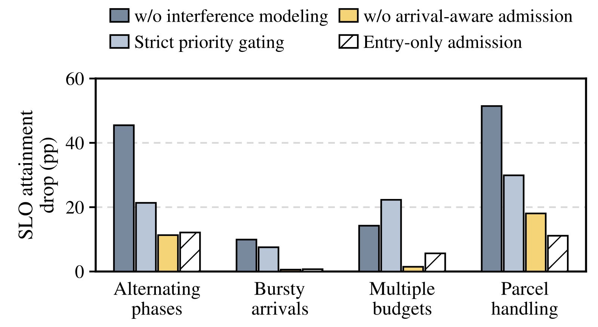
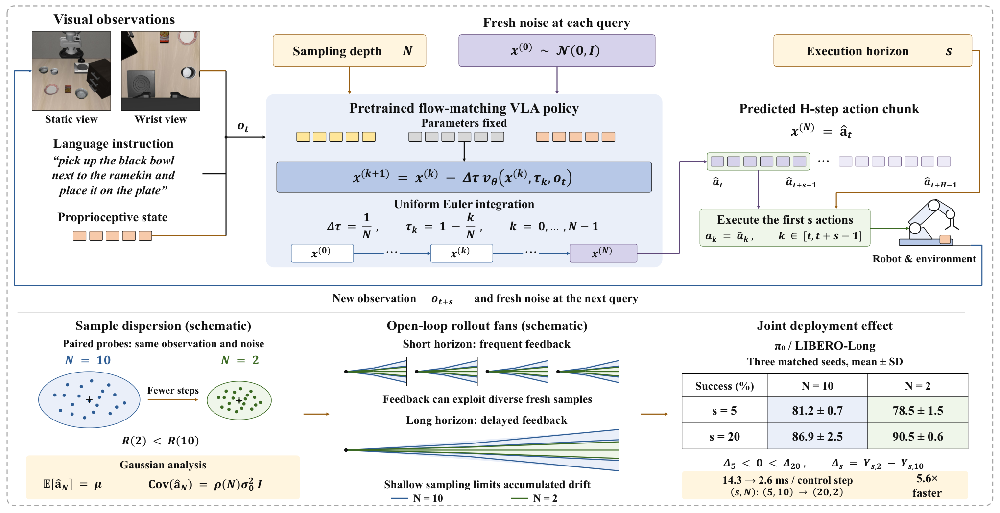

一台机器人正要把包裹推上传送带，另一台还在空中搬运：一张 GPU 该先给谁算动作仓库里，一排机械臂在处理包裹。一台刚抓起一个纸箱，正要把它翻个面推上传送带；旁边一台夹着软包，正在空中平稳地搬过去。两台机器人在同一时刻都向服务器要下一段动作，算起来的计算量差不多。
可它们急的程度完全不一样。推包裹是接触动作，动作晚到一点，就可能要多推几次。空中搬运的路线很好预测，晚一点拿到新动作也照样能走完。如果这时 GPU 上还有别的请求在算，谁先算、能不能再塞一个进去，就决定了推包裹那台会不会卡住。

这篇论文来自 X Square Robot 团队。他们已经有几百台由 VLA 模型（看图、听指令、直接输出动作的大模型）驱动的机器人在真实环境里干活，需要让很多台机器人共享 GPU，把推理成本降下来。现有的做法有几类。SGLang、vLLM-Omni 这类通用推理引擎提高的是单个请求的效率和整体吞吐，但吞吐高不等于机器人干活快，动作晚到照样会拖慢机器人。Robion 已经把图像编码和动作生成重叠起来算，但所有请求按统一的轮次一起往前走。按截止时间排队（EDF）能决定谁先上 GPU，却挡不住已经在跑的计算拖慢急的请求。他们的 XInfer 把两件事分开：一个异步引擎让每个请求的每一段计算一旦条件满足就往前算；一个调度器先判断哪些请求需要保护，再根据预测的相互干扰，决定此刻能不能再放一段新计算上 GPU。在三个 VLA 模型上，一张 GPU 在满足延迟要求下能服务的机器人数，比 Robion 多出 26% 到 64%。机器人集群的推理服务，要按每个请求还剩多少余量来决定放不放新计算进来；这些结果来自模拟的机器人请求流，输入内容是固定的。
先把几个词说清楚
VLA 模型每次看一组画面，输出一段未来的动作，叫一个动作块。机器人拿到新动作块之前，会继续执行手上旧的那一块。手上的动作执行完了新的还没到，机器人就停下来等。
一次 VLA 推理分三段。ViT 段把三路摄像头的画面编码成 token；Prefill 段让语言模型读完画面、指令和机器人状态；Action 段用去噪的方法一步步生成动作。三段用的计算方式不一样，可以交错着在同一张 GPU 上跑。
每个请求都带着一个响应预算，就是这次最晚多少毫秒内要回来。急的时候预算可以紧到 90 毫秒，不急时放宽到 400 毫秒，这是论文实验里交替使用的两档。预算由机器人控制器或上层策略填写，调度器只负责照着它安排。
论文的目标指标叫有效机器人容量（ERC）：一张 GPU 在满足延迟和可靠性要求时，最多能同时服务几台机器人。三模型对比里的要求是，响应时间的中位数低于 150 毫秒，而且没有一个请求出错。
为什么不能只追吞吐
先看动作晚到有多大代价。作者在一台真实的包裹处理机器人上，人为在动作送达前加延迟。加 200 毫秒，每小时完成的包裹数下降 29.6%，说明动作晚到会直接变成少干的活。从加 100 毫秒到加 150 毫秒，处理量一下掉了 18%。所以作者把标准定在 150 毫秒：50 毫秒基础延迟，加上曲线开始陡降前的 100 毫秒。
再看机器人怎么发请求。每台机器人最多同时挂一个请求，而且两次请求之间至少隔 180 毫秒。上一个回复晚到，下一个请求就跟着晚发。所以服务器回得慢，不只是这次慢，还会让这台机器人整体更新动作的次数变少。
最后是并行带来的干扰。把引擎完全打开，24 台机器人时 π0.5 的吞吐从每秒 54.90 个请求涨到 131.53 个，是 2.40 倍。可在另一组 32 台机器人的实验里，加上「各段独立往前走」之后，吞吐只多了 9.7%，最慢那 1% 请求的延迟（P99）却从 467 毫秒升到 560 毫秒。原因是 GPU 上的一段计算一旦开始就不能打断。一个不急的请求正在做 Prefill，急的请求就算排到队首，也只能等它算完，或者跟它抢着算、一起变慢。
调度器先问两个问题
XInfer 的调度器在每一段计算开始前都要回答两个问题。
第一个问题是：哪些请求需要保护？对每个请求，调度器算一个余量：离截止时间还剩多久，减去它自己剩下的计算还要多久。余量就是这个请求还能被耽误的时间。再看 GPU 上其他请求正在跑的普通计算（没有被保护的那些）里，最长的那段还要多久才结束；没有这样的计算就算 0。余量比这段时间还短，说明光等它跑完就可能误点，这个请求就被列为受保护。 Hoot 说
示意：请求 C 离截止时间还有 20 毫秒。即使独占 GPU（并发为 0），它剩下的计算还要 25 毫秒。正文走一遍讲的是 A 怎么分配余量，没有走这条规则。
独占也赶不上 → 进入 L → 即使晋升也不进有效保护集 H → 普通候选不必为它让路
- 截止时间、独占耗时 → 集合 L调度器先按独占 GPU 来估 C 还要多久，这个量只用来判断它是不是已经来不及。离截止还剩 20 毫秒，独占也要 25 毫秒，20 小于 25，C 就算一个人用 GPU 也赶不上，被放进集合 L。20 < 25
- 负载下的余量 → 晋升到 P晋升用的余量，要按当时的负载来算：正在跑的计算，加上资源还能发出的受保护就绪工作。C 独占就要 25 毫秒，有负载时剩下的时间只会更长，余量至多是 20 − 25 = −5 毫秒，已经是负数，所以仍会被晋升，进入已晋升集合 P。余量 ≤ 20 − 25 = −5 毫秒
- P、L → 有效保护集 H有效保护集不是 P 本身，而是 H = P 去掉 L。C 在 P 里也在 L 里，所以不在 H 里：晋升了，还不等于获得有效保护。
- 负余量的 C ← 普通候选放行普通计算时，调度器只检查它会让 H 里的请求多慢多少，用的也是按同一负载算的余量。若 C 留在 H 里，它的余量至多是 −5 毫秒，任何会增加耗时的候选都满足不了「多慢的时间不超过余量」，别的计算会被全部挡住。多慢的时间 ≤ 余量（至多 −5 毫秒）：放行不了
- H 去掉 C → 普通计算和其他请求把 C 暂时排除出 H 之后，普通计算仍按其他请求的余量判断能不能上 GPU。C 照样可以被服务；如果过一会儿预测变了，独占也能赶上，它还可以再获得保护。

出处
论文 §4.3：Effective protection is withheld while the request is predicted late even in isolation；附录 Algorithm 2：L 是 ℓ−t < R(0) 的请求，有效保护集 H = P\L。请求 C 的 20 毫秒和 25 毫秒是示意数字。第二个问题是：一段新计算现在能不能上 GPU？受保护请求自己的计算有资源就跑。别的请求的新计算，要先预测它上 GPU 以后，会让每个受保护请求多慢几毫秒。做法是对受保护请求把剩下的时间估算两遍：当前这段还剩多久，加上后面几段和输出处理各要多久，一遍按 GPU 上现有的计算量算，一遍按加上这个候选之后的计算量算，两者之差就是它会多慢的时间。多慢的时间不超过对方的余量，才放行；超过了就先排着，调度器接着看下一个候选。
这个预测不是拍脑袋，因为调度器用一个事先校准过的模型，按 GPU 上同时在跑几段 ViT、Prefill、Action，估算每段计算剩下的时间。在 8、18、20 台机器人的回放里，估算误差平均只有 2.0 到 2.8 毫秒。每做一次决定，CPU 上只花 73 到 77 微秒（P99）。
走一遍：A 的 10 毫秒余量怎么分
下面是论文 Figure 6 里的示意例子，数字来自论文，用来说明规则，不是实测。
第一步，算 A 的余量。请求 A 离截止时间还有 50 毫秒，它自己剩下的计算还要 40 毫秒，所以余量 = 50 − 40 = 10 毫秒。
第二步，判断要不要保护 A。GPU 上正在跑三段不急的计算，分别还剩 4 毫秒（ViT）、14 毫秒（Prefill）、8 毫秒（Action）。其中最长的是 14 毫秒。A 的余量 10 毫秒比 14 毫秒短，光等那段 Prefill 跑完 A 就可能误点，所以 A 被列为受保护。
第三步，候选 u 想上 GPU，它是另一个请求的一段 Prefill。预测显示，放它进来会让 A 多慢 6 毫秒。因为 6 不超过 10，所以放行。A 的余量随之更新为 10 − 6 = 4 毫秒。
第四步，候选 v 想上 GPU，它是一段 ViT，预测也会让 A 多慢 6 毫秒。这时 A 只剩 4 毫秒余量，6 大于 4，v 先排着。如果调度器拿最初的 10 毫秒分别检查 u 和 v，两个都会放行，A 实际要多慢 12 毫秒，就误点了。所以每放行一段，都要先更新余量再看下一个。
第五步，还没到的请求也要算进去。调度器把最近 180 毫秒里到达的请求按预算分组：某个预算出现过 k 次，就预计每隔 180 ÷ k 毫秒还会来一个同样预算的请求，并按完整的三段计算估算它要多久。另一个候选 w 通过了对当前受保护请求的检查，但按这个办法，预计 w 跑的期间会来一个截止时间更早的请求 e。调度器把 w 也算进同时运行的计算量里，估算 e 到达后从 ViT 开始走完三段要多久，再加上前端处理的预留时间。这个时间超过了 e 的预算，说明 w 现在开始跑，e 到了以后就赶不上，所以 w 也先排着。
走完这五步可以看出，调度器保护急的请求，并不是把别的计算全停掉，而是在余量允许的范围内继续放新计算上 GPU。论文的消融正好对比了「全停掉」的做法：只要有受保护请求就挡住所有普通计算，在八种设置下的达标率下降 7.5 到 30.5 个百分点。

图里下降最多的是去掉干扰预测：调度器只按每段计算单独跑时要多久来估算，不考虑同时跑带来的拖慢。在 18 台机器人时，交替阶段和包裹处理两组负载的达标率分别下降 45.5 和 51.4 个百分点。这说明「能不能放行」这个判断，关键在于估准同时跑会慢多少。去掉对未来请求的预测，损失主要出现在急请求占比高、请求扎堆到达的时候；在 16 台和 18 台机器人时，加上这项检查让平均达标率分别高 5.0 和 11.3 个百分点。
能多服务几台机器人
先看三模型对比。所有系统用同样的模型权重、同样的输入和同样的 GPU，一个一个加机器人，直到响应中位数超过 150 毫秒或出现错误。
| 服务系统 | VLA-2B | Wall-OSS-0.5 | π0.5 |
|---|---|---|---|
| XInfer | 18 | 15 | 24 |
| Robion | 11 | 10 | 19 |
| vLLM-Omni | 10 | 8 | 15 |
| SGLang | 10 | 5 | 14 |
| FlashRT | 5 | 4 | 9 |
（数字来自论文表 2，单位是台）
这说明在同一张 GPU 上，XInfer 比最接近的 Robion 多服务 5 到 7 台机器人。摘要里的 1.26 到 3.75 倍，下限是 π0.5 上对 Robion 的 24 比 19，上限是 Wall-OSS-0.5 上对 FlashRT 的 15 比 4。

再看预算各不相同的情况。这组实验让每台机器人每完成 30 个请求，就在 90 毫秒和 400 毫秒两种预算之间切换一次，为了模拟堆积木时对齐、接触和搬运交替出现。所有调度策略共用同一套 VLA-2B 后端，要求至少 95% 的请求按预算返回。XInfer 能服务 18 台，Slack-Gate（有请求余量低于 40 毫秒就暂停不急的计算）15 台，先来先服务 14 台，EDF 12 台。
包裹处理负载的预算，来自生产中 23 段真实操作里的夹爪事件。在这组负载上，XInfer 能服务 14 台，Slack-Gate 12 台，先来先服务 10 台，EDF 在测试范围内一直没有达标。这组负载里六成以上是紧预算请求，有时所有机器人同时处在紧预算阶段。
这对做推理服务的人意味着什么
给机器人集群做推理服务时，请求的截止时间应该由机器人此刻在做什么来决定，调度器要能同时看见截止时间和 GPU 上的干扰。
如果你在做 VLA 或其他闭环控制模型的服务，先在请求里加一个响应预算字段，让机器人端根据动作阶段去填。其次，把一次推理拆成几段，让不同请求的段可以交错执行，而不是整请求排队或按固定轮次走。最后，测一下几段计算同时跑时各自会慢多少，放行新计算之前用它来检查急请求还来不来得及。评测也要换口径：只报吞吐和平均延迟不够，要报在延迟要求下能撑几台机器人。
局限
实验里的机器人是模拟出来的请求流，每个请求用固定的三路图像、固定指令和 14 维的合成状态，不是真实机器人实时发来的数据。论文里的包裹产量曲线，是用单台机器人的延迟实验去外推多台机器人，作者也标明这和实测的多机产量不是一回事。
响应预算怎么定不在调度器里，论文只是用 90 和 400 毫秒交替的预算，以及从生产记录推出的预算来测试。放行判断依据的是预测，不是最坏情况下的时间上界，所以不保证每个请求都按时返回。VLA-2B 的权重没有公开，Robion 是作者自己在单卡上的复现，GPU 都是消费级的 Blackwell 显卡。
读完这篇，你觉得
夜读鸮记下了，谢谢你的反馈。
点一下即可，无需登录；再点一次撤回。只统计匿名次数，不记录你是谁。
相关论文RELATED
 Embodied · 2026-11-16What Makes a VLA Reactive? A Study of Execution Strategies for Dynamic ManipulationVLA 模型一次预测未来一小段动作，可物体在动时，这段动作还没执行完就过时了。作者拿预训练的 π0.5 在两个动态仿真基准和三个真机任务上，系统地比较了预测多长、每次执行多少步、同步还是异步推理等执行方式。结论是预测大约一秒的动作最好；执行步数短时，异步推理帮得更多；让前后两段轨迹衔接连贯的方法，比只降延迟的方法更有效。最出乎意料的是传送带抓取任务。用强化学习微调策略能修好针对性的失败，但同一个模型什么都不训练，只把执行步数改成 5，成功率就达到 71%，和训练后一样好。机器人反应快不快，执行方式和策略本身一样重要，评测时要放在一起看。
Embodied · 2026-11-16What Makes a VLA Reactive? A Study of Execution Strategies for Dynamic ManipulationVLA 模型一次预测未来一小段动作，可物体在动时，这段动作还没执行完就过时了。作者拿预训练的 π0.5 在两个动态仿真基准和三个真机任务上，系统地比较了预测多长、每次执行多少步、同步还是异步推理等执行方式。结论是预测大约一秒的动作最好；执行步数短时，异步推理帮得更多；让前后两段轨迹衔接连贯的方法，比只降延迟的方法更有效。最出乎意料的是传送带抓取任务。用强化学习微调策略能修好针对性的失败，但同一个模型什么都不训练，只把执行步数改成 5，成功率就达到 71%，和训练后一样好。机器人反应快不快，执行方式和策略本身一样重要，评测时要放在一起看。
Embodied · 2026-10-27Coupling Execution Horizon and Sampling Depth in Flow-Matching VLA Policies这篇论文发现，基于流匹配的视觉语言动作模型里，求解动作的迭代步数和每次执行的动作步数是耦合的，最优选择还会反转。这类模型从一段随机噪声出发，用数值求解一步步把它推成一段平滑的动作。部署时通常把两者分开调：执行步数用来摊薄推理延迟，迭代步数则保持很高以求精确。频繁重新规划时，迭代步数少确实更差；一次执行很长一段动作时，迭代步数少反而更好，因为粗略求解让动作更集中在平均轨迹附近，减少了开环执行中误差的累积。每次只执行 5 步时，迭代 10 步更好。每次执行 20 步时，迭代 2 步反而更好。这个规律在多个基准和真机上都成立，不用训练就能降延迟、提成功率。 Embodied · 2026-11-12APS-VLA: Action-Guided and Future-Aware Token Pruning for Efficient Vision-Language-Action ModelsVLA 每一步都要处理几百个视觉 token，推理很慢，可下一步动作往往只取决于画面里的一小块。这篇论文在冻结的 VLA 前面加了一个小打分器，从示范轨迹里学该留下哪些 token。训练时有两个要求：留下的 token 要让原模型给出和看全图时一样的动作，还要能配合示范动作预测几步之后的画面变化。部署时打分器只挑一次，原模型参数和出动作的方式都不变。在 LIBERO 上剪掉 75% 的视觉 token，推理快了 1.57 倍，成功率只比不剪低 1.25 个百分点。再剪狠一些，速度几乎不再涨，成功率却掉得更快。该留哪些 token，要看它对接下来的动作和画面变化有没有用，而不只是看它和指令像不像。这和推荐里按下游目标学特征筛选是同一个思路。
Embodied · 2026-11-12APS-VLA: Action-Guided and Future-Aware Token Pruning for Efficient Vision-Language-Action ModelsVLA 每一步都要处理几百个视觉 token，推理很慢，可下一步动作往往只取决于画面里的一小块。这篇论文在冻结的 VLA 前面加了一个小打分器，从示范轨迹里学该留下哪些 token。训练时有两个要求：留下的 token 要让原模型给出和看全图时一样的动作，还要能配合示范动作预测几步之后的画面变化。部署时打分器只挑一次，原模型参数和出动作的方式都不变。在 LIBERO 上剪掉 75% 的视觉 token，推理快了 1.57 倍，成功率只比不剪低 1.25 个百分点。再剪狠一些，速度几乎不再涨，成功率却掉得更快。该留哪些 token，要看它对接下来的动作和画面变化有没有用，而不只是看它和指令像不像。这和推荐里按下游目标学特征筛选是同一个思路。
讨论
欢迎补充实验细节、复现经验或不同看法。需 GitHub 登录。
正在加载讨论…